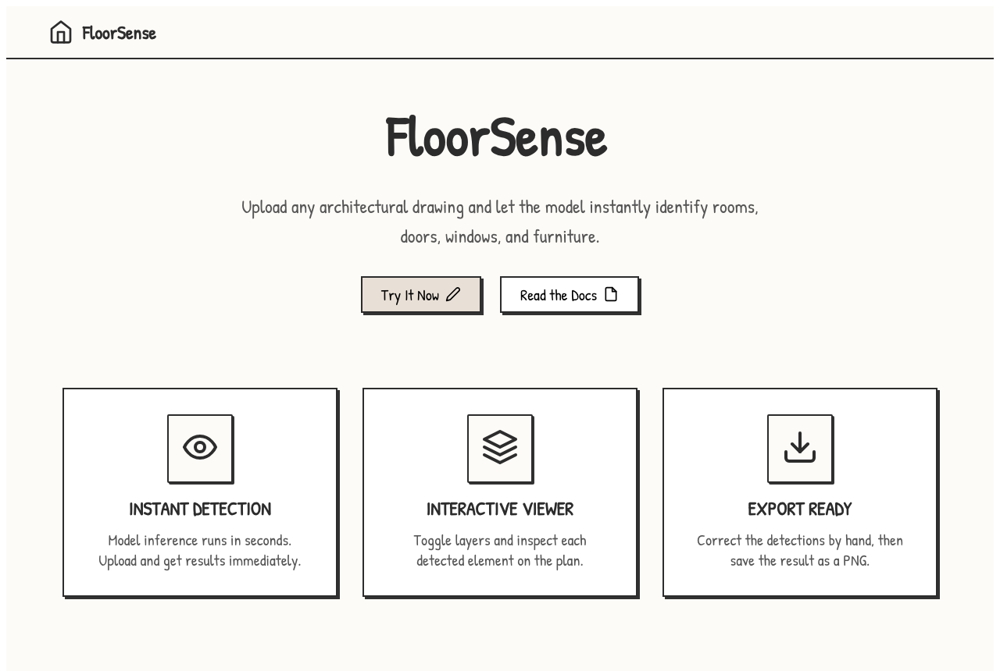
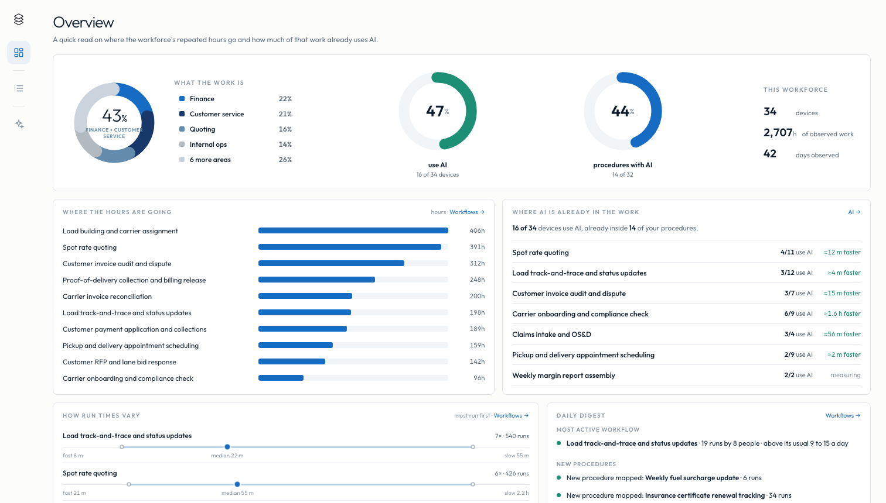
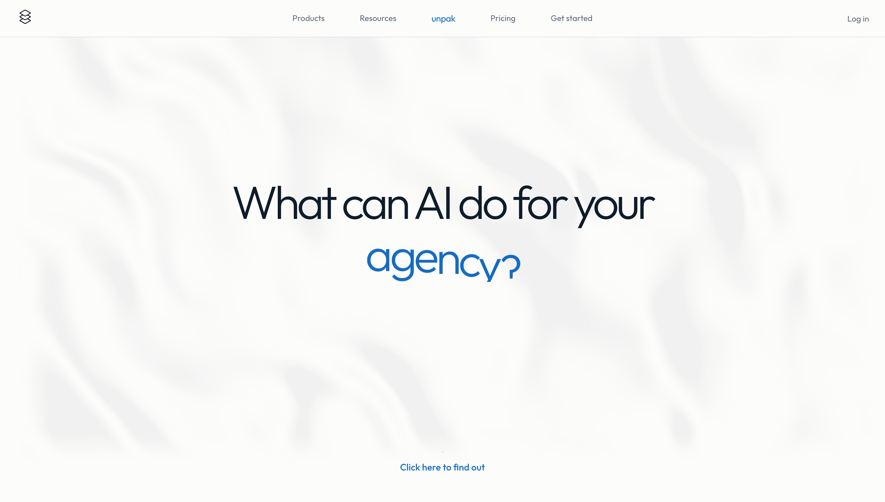
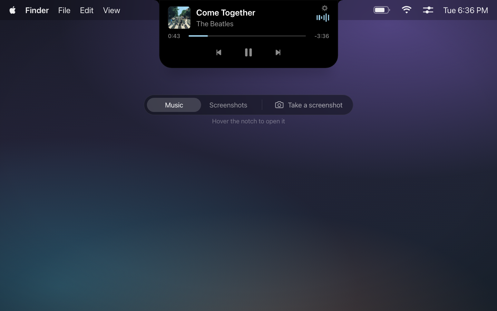

Personal
projects that I built for myself
-

FloorSense
A computer vision web app that identifies architectural elements in floorplan images using YOLO-based object detection, with real-time detection visualization and correction tools.
Technical specifications
- What it is
- Drop in a floor plan and the model marks what it finds. The overlay stays editable — add a box, click one to remove it, export the corrected plan as a PNG.
- Model
- A YOLO detector trained on Roboflow. Six classes — perimeter, bathroom, door, window, stairs, furniture — kept above a 0.40 confidence floor.
- Built on
- Vanilla JavaScript, no framework — a port of the original Next.js and React build. A single Cloudflare Pages Function holds the Roboflow key so it never reaches the browser.
- Hosting
- Cloudflare Pages.
-
Unpak System
A workforce intelligence platform that surfaces how work actually happens by observing human–computer and human–AI interaction. I designed the full capture and processing architecture and built the pipeline behind it.
A Rust agent on each machine reads the focused window, the accessibility tree, and screen text, keeping the text and discarding the image. Nothing leaves until a scrubbing pass has run over a throwaway copy of the local database — credentials, card numbers and personal data are stripped by checksum-gated patterns rather than a model, because a hard guarantee cannot be built on something that is usually right.
The pipeline behind it reduces raw activity through a funnel: atoms, then grouped steps, then whole procedures, then a plain-language overview. Every count and duration is computed deterministically; language models only write the prose and do the grouping, and each stage uses the smallest model that holds up. A nightly pass clusters recurring procedures across the workforce into families with a canonical path, so a workflow can be counted even when six people run it six slightly different ways.
Technical specifications
- What it is
- The capture agent and the pipeline behind it — what runs on the machine, and what turns raw activity into a readable account of the work.
- Data
- The focused window, the accessibility tree and on-screen text. Text is kept and the image discarded, and a scrubbing pass runs over a throwaway copy of the local database before anything leaves the machine.
- Built on
- Rust for the agent, Swift for the macOS client, Python for the pipeline. SQLite on the device, Neon Postgres upstream.
- Hosting
- Modal for the pipeline, Cloudflare R2 for storage.
-

Unpak Dashboard
The console a customer reads their own operating picture from: which procedures their workforce actually repeats, where the hours go, how much run times vary, and where AI has already turned up in the work without anyone deciding it should.
No framework and no charting library — every ring, dial, sparkline, box plot and trunk-and-branch diagram is SVG written by hand, which is what let the run-shape rows sit on the same station grid as the procedure they describe and visibly add up to its run count. The numbers hold themselves to the same standard: a comparison that lacks the runs to support it says measuring and names what it is waiting for, rather than printing a figure that reads as settled.
The demo runs on fabricated data for a fictional freight brokerage. It is the shipped build, served from a static file instead of the live database.
Technical specifications
- What it is
- Three views over one engagement: an overview, the procedures a workforce repeats, and where AI has turned up in the work.
- Data
- One JSON document per engagement. In production a Pages Function serves it from Postgres; the demo bakes it into a flat file. The fictional tenant covers 29 people, 32 procedures and 2,779 runs over a 42-day window.
- Built on
- Astro, with no charting library — every ring, dial, sparkline and box plot is hand-written SVG. Fonts self-hosted.
- Hosting
- Cloudflare Pages.
-

Unpak Website
The product site: twenty routes across three product lines, a pricing page, an essay, a help centre and a two-step intake form.
The hero sits on a WebGL ripple shader behind a headline that rolls through the word it is asking about. Below it every section carries its own diagram — scattered activity resolving into an ordered procedure, work streaming in from four departments, a stack of layers that writes its own labels a character at a time as it scrolls into view. Fonts are self-hosted and nothing is fetched from a CDN, so the whole site is a directory of flat files.
Technical specifications
- What it is
- The marketing site: three product lines, pricing, a thesis essay, a help centre, careers, and a two-step intake form.
- Data
- None at runtime. Content compiles into the build and the fonts are self-hosted, so the site ships as a directory of flat files with nothing fetched from a CDN.
- Built on
- Astro. A WebGL ripple shader behind the hero, and a hand-written canvas or SVG diagram for each section below it.
- Hosting
- Cloudflare Pages.
-

Notch
A macOS utility that turns the display notch into an interactive hub. Hover it and the black blob expands into Now Playing controls, a screenshot shelf, and clipboard history. A menu-bar-less SwiftUI/AppKit app that lives entirely in the notch.
A Swift package cannot run on a web page, so the demo is a recreation rather than the app: the silhouette, the panel sizes, the state machine and every animation timing are carried over from the source, while the music and the screenshot shelf are stand-ins for what the real thing reads off your own machine. It plays itself until you take hold of it.
Technical specifications
- What it is
- Hover the notch and it expands into Now Playing controls, a shelf of recent screenshots, and clipboard history. Move away and it closes back into the hardware.
- Data
- All local. Now Playing state, recent screenshots and clipboard entries stay on the machine — no account, no sync.
- Built on
- Swift, SwiftUI and AppKit.
- Hosting
- None. It ships as a macOS app with no backend, and no menu bar item.
-
Steward AI
[ description to come ]